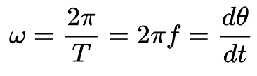
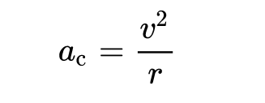
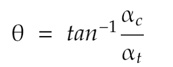
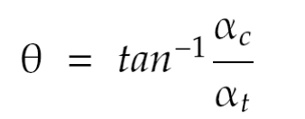

Circular Motion
circular motion is a movement of an object along circular path
Uniform Circular Motion
uniform circular motion describes the motion of a body in a circular path at constant speed. its velocity is not constant because it's direction of travel is always in change. cause of the presence centripetal acceleration is of constant magnitude and directed at all times towards the axis of rotation equle to the following :
 Non-Uniform Circular Motion
In non-uniform circular motion an object is moving in a circular path with a varying speed. because of the presence of tangential acceleration in addition to normal(centripetal) acceleration. Its magnitude and angle equal to the following:
 
